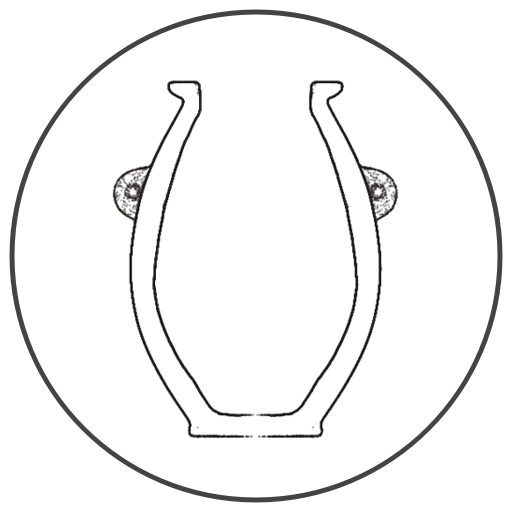

 |
The goal and vision of Arc Scientific is to provide comprehensive and detailed analysis on archaeological and historical artifacts, through empirically valid and well-designed, repeatable methodologies. With the goal of furthering the progress of understanding, we will openly share our results, insights and data for scrutiny and further research with the Open Research Community at large. |
Arc Scientific is a completely non-profit project dedicated to the preservation, understanding and wide availability of data and research relating to our shared history and heritage on Earth. We are driven by an insatiable curiosity, and a deep desire for moving ever towards the truth, wherever the data may lead us.
If you would like to join us in this endeavour, please check back here soon, where we will be sharing our first series of comprehensive analysis on a number of recently digitized ancient hard-stone vessels.